Quantities¶
The following is a list of all physical quantities relevant to SEA.
General quantities¶
- frequency
- Frequency f is the number of occurrences of a repeating event per unit time and has the unit hertz (Hz).
- angular frequency
Angular frequency
 is the frequency of an oscillation in unit radians per second (rad/s).
is the frequency of an oscillation in unit radians per second (rad/s).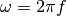
- speed of sound
Speed of sound c describes the speed at which a wave passes through a medium.
Phase speed 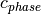
Group speed 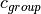
Mechanical quantities¶
- aera moment of inertia
second moment of inertia - Area moment of area, also known as ‘second moment of inertia, ‘moment of inertia of plane area, or ‘second area moment’, is a geometrical property of an area which reflects how its points are distributed with regards to an arbitrary axis. It has unit (m^4).
- torsional moment of rigidity
- The torsional moment of rigidity J
- radius of gyration
Radius of gyration
 or gyradius is the name of several related measures of the size of an object, a surface,
or an ensemble of points. It is calculated as the root mean square distance of the objects’ parts from either its center of gravity or a given axis.
or gyradius is the name of several related measures of the size of an object, a surface,
or an ensemble of points. It is calculated as the root mean square distance of the objects’ parts from either its center of gravity or a given axis.
Energy quantities¶
- velocity
- The velocity v
- velocity level
The velocity level
 is given by
is given by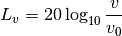
where 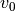 is a reference velocity.
- mobility
- The mobility Y describes how easily a body moves when subject to a force.
- energy
- The energy E
- power dissipation
The power dissipation P in a subsystem i is given by
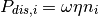
where
 is the loss factor of the subsystem.
is the loss factor of the subsystem.
Modal quantities¶
- conductivity
The conductivity C describes the vibrational coupling. The coupling is however more often desribed by coupling loss factors. The conductivity and the coupling loss factor are related as
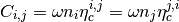
- coupling loss factor
- The coupling loss factors describes the losses in a coupling.
- mode count
- The mode count N is the amount of modes up to the angular frequency .
For a simple structure this value can be calculated, while more complex structures require FEA or estimations.
- modal density
The modal density n is obtained by differentiating the mode count N with respect to the angular frequency
.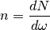
Modal densities in SeaPy are as function of
, so 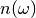- modal overlap
The modal overlap M describes the overlap of modes and thus dissipation.
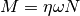
- modal energy
The modal energy e is the energy in a band per mode.
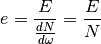
Material quantities¶
- density
- The density

- young’s modulus
- Young’s modulus E, also known as the tensile modulus or elastic modulus, is a measure of the stiffness of an elastic material, and has the unit pascal (Pa).
- bending stiffness
flexural rigidity - The bending stiffness or flexural rigidity D.
- shear modulus
- Shear modulus G or modulus of rigidity, is defined as the ratio of shear stress to the shear strain, and has the unit pascal (Pa).
- bulk modulus
- Bulk modulus K of a substance measures the substance’s resistance to uniform compression. It is defined as the ratio of the infinitesimal pressure increase to the resulting relative decrease of the volume, and has the unit pascal (Pa).
- poisson’s ratio
- Poisson’s ratio
 is the negative ratio of transverse to axial strain. Poisson’s ratio is dimensionless.
is the negative ratio of transverse to axial strain. Poisson’s ratio is dimensionless. - loss factor
Loss factor
describes the amount of energy lost per cycle.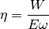